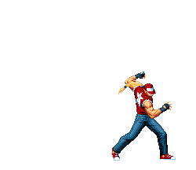

Terry e Andy eram órfãos que viviam nas ruas. Eles logo foram adotados por Jeff Bogard e eventualmente viveram em Southtown.
Quando Terry tinha 10 anos, ele testemunhou a morte de seu pai nas mãos de Geese Howard.
Sabendo que precisavam de mais treinamento para confrontar Geese, os irmãos juraram passar uma década para aperfeiçoar suas artes marciais antes de tentar vingar seu pai.
Ao contrário de seu irmão Andy, que deixou Southtown para treinar no Japão,
Terry escolheu perambular em seu país de origem, combinando as habilidades aprendidas com
seu pai, o mentor de seu pai Tung Fu Rue e as habilidades adquiridas nas ruas.
Personalidade
Terry Bogard é um homem incrivelmente carismático, alegre e amigável com todos ao seu redor. Ele não tem má vontade em relação a alguém que não seja o verdadeiramente malicioso e irremediável, incluindo inimigos como Geese Howard, o assassino de seu pai adotivo, e o psicopata Ryuji Yamazaki.
Seu relacionamento com Andy é de respeito, reconhecendo seu irmão mais novo como seu rival mais feroz. Ele sente um senso de parentesco com Blue Mary por sua perda, e os dois desenvolveram um relacionamento de longo tempo. Ele trata Rock Howard como seu filho, mas permite que ele escolha seu próprio caminho na vida. Ele provocativamente chama Rock, "Rookie" (Novato). Terry também é bem informado sobre o que acontece nas ruas.
Poderes e Habilidades

Terry usando especial
Terry não só é um lutador bem treinado como também tem controle sobre sua energia vital, o deixando com um certo nível de força e defesa sobre-humana.
Wave - Concentrando energia em seu punho e então socando o chão, Terry lança projétil de energia em forma de onda que se arrasta no chão para frente.
Round Wave - Semelhante ao Power Wave, Terry bate no chão, mas a onda não é mais um projétil, apenas uma explosão de energia.
Geyser - Versão mais poderosa do Power Wave, concentrando mais energia ao socar o chão, ao invés de lançar uma onda de energia, ele cria um geiser que explode em sua frente ou em baixo do oponente.
Geyser - Terry dá um soco no chão pela segunda vez, criando um grande gêiser de energia.
Triple Geyser/Trinity Geyser - Terry soca o chão 3 vezes, cada um criando três grandes gêiser de energia.
Heat Up Geyser - Terry soca seu oponente com um soco baixo e o lança para cima com um uppercut. Enquanto o oponente está no ar, Terry o atinge com uma versão maior do Power Geyser.
Burn Knuckle - Concentrando energia em seu punho, Terry da uma investida contra seu oponente para acertar um poderoso soco energizado.
Rising Tackle - Terry gira para cima de ponta cabeça para acertar seu adversário.
Crack Shoot - Terry pula e gira o corpo com a perna estendida para acertar o oponente.
Dunk - Terry faz um chute voador e em seguida derruba seu oponente com um soco energizado.
Max Dunk - Terry bate em seu oponente com uma forte investida no ombro e termina com um Power Dunk.
Charge - Terry corre em direção ao oponente e o acerta com um bloqueio no ombro.
Bashing Sway - Terry corre para a frente com um golpe de cotovelo seguido por um chute alto girando.
Fire Kick - Terry corre para frente com uma rasteira e se levanta com um chute alto, mandando o adversário para o ar.
Drive - Terry avança, gira antes de lançar uma versão mais lenta e mais curta do Burn Knuckle.
Quick Burn - Terry usa um uppercut seguido por um rápido soco para baixo, ambos os golpes são carregados de energia.
Overheat Geyser - Um combo de técnicas, começando com Power Charge seguindo por um soco voador e finalizando com um Power Geyser.
Buster Wolf - Terry acerta um soco com carga de energia no oponente, ele então acerta outro que irá liberar uma tremenda explosão.
Rising Force - Terry vai em direção ao seu oponente, e o acerta com um bloqueio no ombro, seguido por um soco e vários Rising Tackles.
Rising Beat - Terry da uma investida em seu oponente e então o acerta com um longo combo de ataques e finaliza a sequência com um Buster Wolf.
Stream - Terry pula no ar e, enquanto cercado por uma cúpula de energia, acerta o chão com os dois punhos. Um raio de energia se materializa ao redor dele depois.
Star Dunk Volcano - Terry vira os bonés para trás, lança seu oponente com um joelhada voadora brutal que lança o oponente no ar. Terry então pega o oponente com um Power Dunk, no qual uma estrela aparece de costas ao descer e cria um enorme gêiser sobre o impacto que surge através do oponente, que os lança no ar como resultado.